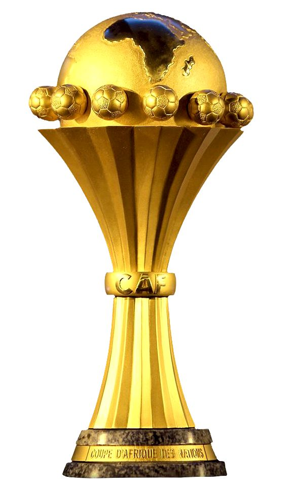

Players country

As of my knowledge cutoff date in January 2022, the Africa Cup of Nations (AFCON) is a prestigious international football (soccer) tournament that showcases the talents of African national teams.
Organiser

Ivory Coast, also known as Côte d'Ivoire, has been selected to host the prestigious Africa Cup of Nations (AFCON) in 2024. This announcement marks a significant moment for both the nation and the African football community.
Stadiums

Abidjan: (Alassane Ouattara Stadium and Félix Houphouët-Boigny Stadium) The economic hub, Abidjan will have two stadiums: Alassane Ouattara Stadium and Félix Houphouët-Boigny Stadium. Abidjan is home to almost six million people.
Timeline
The AFCON is organized by the Confederation of African Football (CAF) and takes place every two years. My information is based on events and decisions up to that date, so I do not have details on the specific host country for the 2024 tournament. The selection of a host country for the AFCON is a significant and highly anticipated event in African football. It involves a competitive bidding process where countries express their interest in hosting the tournament, and the CAF evaluates their proposals. Factors like infrastructure, stadiums, accommodation, and overall readiness play a crucial role in the decision-making process. The AFCON is not only a celebration of football but also a platform for African nations to come together and showcase their cultural richness, unity, and sportsmanship. It brings together fans from across the continent and the world, creating an electric atmosphere both in the stadiums and at home. The tournament has a rich history of producing footballing legends and memorable moments. It serves as a talent showcase for players who often go on to have successful careers in top European leagues. The decision to host AFCON 2024 in the Ivory Coast reflects the country's growing prominence in the world of sports and its commitment to hosting major international events. Ivory Coast boasts a rich footballing tradition, with a passionate fan base and a history of producing exceptional football talent. The nation's football legacy, coupled with its investment in infrastructure and sports facilities, makes it a fitting host for this prestigious tournament. The Ivory Coast government and local organizing committee are expected to work tirelessly to ensure that the event is a resounding success.
Abidjan: (Alassane Ouattara Stadium and Félix Houphouët-Boigny Stadium) The economic hub, Abidjan will have two stadiums: Alassane Ouattara Stadium and Félix Houphouët-Boigny Stadium. Abidjan is home to almost six million people. The Alassane Ouattara Stadium will host the opening match on 13 January 2024 and the final of the competition on 11 February 2024. In preparation for the competition, the Félix Houphouët-Boigny Stadium underwent major renovations, including upgrades to its structure, seating, and turf. The stadium now has a seating capacity of 29,000. It will host Cote d’Ivoire next friendly on 14 October 2023 – the match will be used as a test event. Bouaké: (Stade De La Paix) Bouaké, along with Abidjan, served as a host city for the 1984 Africa Cup of Nations. It is located in the central part of the country, 350 km from the economic capital, and 100 km from Yamoussoukro, the political capital. Korhogo: (Stade Amadou Gon Coulibaly) Korhogo, known as the "Pôrô" city, named after a tradition of the local Sénoufo ethnic group, is the capital of the Savanes region. It is located approximately 207 km from Mali and 242 km from Burkina Faso, with an estimated population of around 300,000 inhabitants. This will involve the renovation and construction of stadiums, accommodation, transportation networks, and security measures to accommodate teams, officials, and fans from across the African continent and beyond. The Africa Cup of Nations not only showcases the talent of African football but also promotes cultural exchange and unity among nations.
About
Africa cup nation
Africa Cup of Nations (AFCON) The Africa Cup of Nations (AFCON) stands as one of the most prestigious football tournaments on the African continent. Organized by the Confederation of African Football (CAF), this international competition brings together the best national teams from across Africa to compete for the title of continental champions. Tournament Frequency The AFCON takes place every two years, providing a platform for African nations to showcase their footballing prowess, unity, and cultural diversity. Hosting Process The selection of a host country for the AFCON involves a competitive bidding process. Countries express their interest in hosting the tournament, and the CAF evaluates proposals based on various factors such as infrastructure, stadium facilities, accommodation, and overall readiness. Rich History and Legends The tournament has a rich history, contributing to the creation of footballing legends and memorable moments. AFCON serves as a talent showcase, propelling players to successful careers in top European leagues. Cultural Celebration Beyond being a football competition, AFCON is a celebration of African culture. It provides a platform for nations to come together, fostering a sense of unity and sportsmanship. The tournament's electric atmosphere captivates fans both within the stadiums and around the world. Impact and Legacy AFCON plays a crucial role in shaping the football landscape in Africa. It not only elevates the standard of play but also contributes to the growth and development of the sport on the continent.
